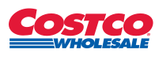
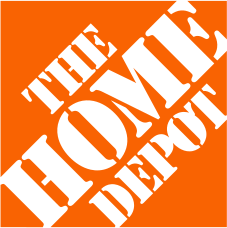
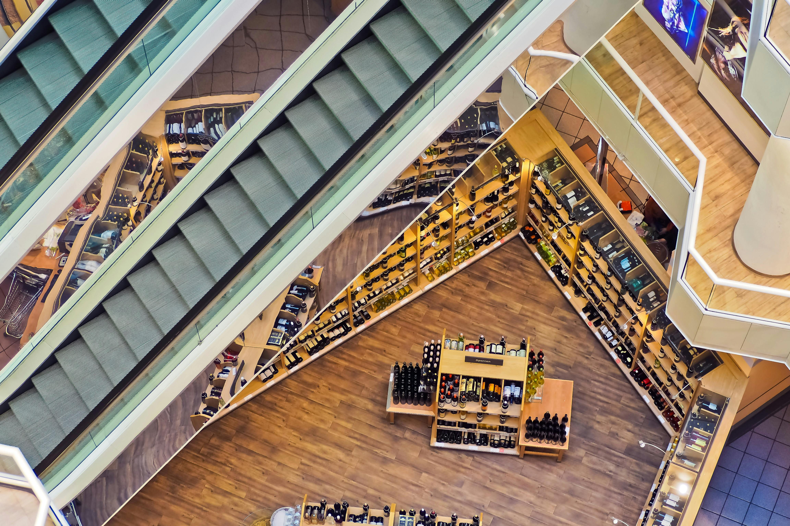

WinTone manages the full process of placing your products in America's largest retail chains, from market research and sales rep introductions to retailer-ready pitch preparation. WinTone 管理将您的产品打入美国最大零售连锁店的全流程——从市场调研、销售代理对接到零售商提案准备。



Every US retailer has its own vendor requirements, buyer relationships, and submission process. We handle the parts that are hard to do from overseas. 每家美国零售商都有独特的供应商要求、采购关系和提交流程。我们负责处理在海外难以完成的环节。
Before entering any retail channel, we conduct a full market analysis tailored to your product category. This includes competitive pricing across major US retailers, regulatory and compliance requirements (FDA, CPSC, FCC depending on category), and a realistic assessment of where your product fits in the current landscape. 在进入任何零售渠道之前，我们会针对您的产品类别进行全面的市场分析，包括各大美国零售商的竞争定价、法规合规要求（根据类别可能涉及 FDA、CPSC、FCC），以及对您产品在当前市场中定位的客观评估。
Our network includes independent sales representatives and rep agencies across the United States, covering every major retail channel from mass market to specialty. We match your product with reps who have existing relationships at your target retailers — people who walk the floor with buyers on a first-name basis. 我们的网络覆盖全美的独立销售代理和代理机构，涵盖从大众市场到专业渠道的各大零售商。我们将您的产品与在目标零售商拥有现有关系的代理配对——这些代理与采购经理相熟，能够直接为您牵线搭桥。
You don't cold-call a Costco buyer. Your rep does. 您不需要冷拨 Costco 的采购电话，您的销售代理会替您完成。
We prepare retailer-ready pitch decks that follow each retailer's specific vendor submission format. This includes professional product photography guidance, landed cost breakdowns, suggested retail pricing, and competitive positioning. For Costco roadshows or Walmart's Open Call, we prepare your team for the specific format and expectations of each event. 我们准备符合各零售商特定供应商提交格式的提案材料，包括专业产品摄影指导、到岸成本分解、建议零售价和竞争定位。对于 Costco 路演或 Walmart 的 Open Call，我们会按照每个活动的特定格式和要求为您的团队做好准备。
Once a retailer says yes, the real work begins. We coordinate logistics between your manufacturing facility and the retailer's distribution requirements — from EDI setup to UPC registration, from packaging compliance to shipping schedules. We stay involved through the first few purchase orders to make sure nothing falls through the cracks. 一旦零售商同意合作，真正的工作才刚刚开始。我们协调您的制造工厂与零售商配送要求之间的物流——从 EDI 设置到 UPC 注册，从包装合规到发货计划。我们会在前几笔采购订单中持续跟进，确保万无一失。
Case Study 案例研究
In early 2023, a Shenzhen-based manufacturer of portable ice makers approached WinTone after spending 18 months trying to break into US retail through trade shows and cold outreach. They had a competitive product — quiet, fast, well-priced — but no connections to the buyers who mattered. 2023 年初，一家深圳便携式制冰机制造商在花费 18 个月通过展会和主动联系试图进入美国零售市场后，找到了 WinTone。他们的产品具有竞争力——噪音低、制冰快、价格合理——但缺少与关键采购人员的联系。
We started with a competitive analysis of the countertop ice maker category across Costco, Amazon, and Target. The market was growing but dominated by three established brands. Our client's product had a genuine advantage: a faster freezing cycle at a lower price point. 我们从 Costco、Amazon 和 Target 的台面制冰机品类竞争分析入手。该市场正在增长，但被三个知名品牌主导。我们客户的产品有真正的优势：更快的制冰速度和更低的价格。
We connected them with a sales rep agency based in Seattle that had placed over 40 SKUs at Costco in the prior five years. Within three months, the rep had secured a Costco roadshow slot. The product sold 4,200 units in its first two-week roadshow and was picked up for a regional test in 120 Costco warehouses the following quarter. 我们将他们与一家位于西雅图的销售代理机构对接，该机构在过去五年中已将 40 多个 SKU 成功引入 Costco。三个月内，代理获得了 Costco 路演名额。产品在首次两周路演中售出 4,200 台，并在随后的季度被选入 120 家 Costco 仓储店进行区域测试。
Result: 4,200 units sold in first roadshow. Regional placement in 120 Costco locations within 9 months. 成果：首次路演售出 4,200 台。9 个月内进入 120 家 Costco 门店进行区域销售。
More engagements 更多合作案例
Guangdong LED manufacturer → Home Depot regional program 广东 LED 制造商 → Home Depot 区域项目
Matched with a lighting-specialist rep agency covering the Southeast US. From first introduction to product on shelf in 8 months, including UL certification coordination and retail packaging redesign. 与覆盖美国东南部的照明专业代理机构配对。从首次接洽到产品上架仅用 8 个月，包括 UL 认证协调和零售包装重新设计。
Zhejiang outdoor furniture producer → Walmart seasonal program 浙江户外家具生产商 → Walmart 季节性项目
Coordinated logistics for 40-foot container shipments to 6 Walmart distribution centers. Managed vendor onboarding, EDI setup, and compliance with Walmart's Responsible Sourcing requirements. 协调 40 英尺集装箱运输至 6 个 Walmart 配送中心的物流。管理供应商入驻、EDI 设置以及符合 Walmart 责任采购要求的合规流程。
WinTone was founded in Arcadia, California by a team with direct experience in both Chinese manufacturing and US retail distribution. We started because we kept seeing the same problem: great products from Chinese factories that couldn't get shelf space in the US — not because the products weren't competitive, but because the manufacturers didn't have the right introductions. WinTone 由一支在中国制造和美国零售分销领域拥有直接经验的团队在加州阿卡迪亚创立。我们创业的原因是不断看到同一个问题：来自中国工厂的优秀产品无法进入美国货架——不是因为产品缺乏竞争力，而是制造商缺少合适的引荐渠道。
US retail runs on relationships. The buyers at Costco, Walmart, and Target work with sales representatives they've known for years. Getting a meeting without an introduction is nearly impossible. That's the gap we fill — we know the reps, we understand the submission process, and we speak both languages. 美国零售业依赖关系运作。Costco、Walmart 和 Target 的采购人员与他们合作多年的销售代理打交道。没有引荐几乎不可能获得会面机会。这就是我们填补的空白——我们认识这些代理，了解提交流程，并且精通中英双语。
Our team operates in English and Mandarin. We work with your engineering and export teams in China and coordinate with US-based sales reps, logistics providers, and retail buyers on the other end. 我们的团队以中英双语运营。我们与您在中国的工程和出口团队合作，同时在美国端协调销售代理、物流供应商和零售采购。
Location地址
Arcadia, California
Languages语言
English & Mandarin 英语和普通话
Focus专注领域
US retail market entry for Chinese manufacturers 帮助中国制造商进入美国零售市场
Retail channels零售渠道
Costco, Walmart, Target, Home Depot, Lowe's, Sam's Club
WinTone did what we couldn't do in two years of trade shows — they got us in front of the right buyer, with the right pitch, at the right time. WinTone 做到了我们参加两年展会都没做到的事——他们在正确的时间，用正确的提案，把我们带到了正确的采购面前。
— Director of International Sales, Consumer Electronics Manufacturer, Shenzhen — 国际销售总监，消费电子制造商，深圳
Their team understands both sides. They know what American retailers expect, and they know how Chinese factories operate. That combination is rare. 他们的团队理解两边的情况。他们知道美国零售商的期望，也了解中国工厂的运作方式。这样的组合非常稀少。
— VP of Operations, Home Goods Manufacturer, Ningbo — 运营副总裁，家居用品制造商，宁波
Whether you're exploring the US market for the first time or ready to pitch a specific retailer, we'll give you an honest assessment of your options. 无论您是首次探索美国市场还是准备向特定零售商提案，我们都会为您提供诚实的选项评估。
Email Us 发送邮件wintoneinfo@gmail.com
150 N Santa Anita Ave, Arcadia, CA 91006